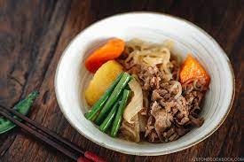

Nikujaga, the Japanese-style meat and potatoes

Ingredients
- 8 snow peas
- 1 tablespoon vegetable oil
- ¼ pound sirloin steak, thinly sliced
- 4 potatoes, cut into bite sized pieces
- 2 cups dashi soup
- ¼ cup soy sauce
- ¼ cup sake
- 1 tablespoon white sugar
Directions
- Put the snow peas in a small saucepan with enough water to cover; bring to a boil and immediately remove from heat. Drain and set aside.
- Heat the oil in a large skillet over medium heat; cook the beef in the oil until browned. Add the potatoes; cook and stir until soft, 5 to 7 minutes. Stir the dashi soup, soy sauce, sake, and sugar into the mixture; simmer for 10 minutes.
- Reduce heat to low and scatter the chopped onion over the mixture; allow to simmer until the liquid is nearly completely evaporated, about 15 minutes more. Top the mixture with the snow peas to serve.
- Enjoy your meal!